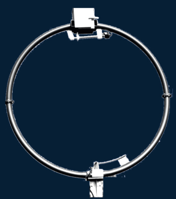

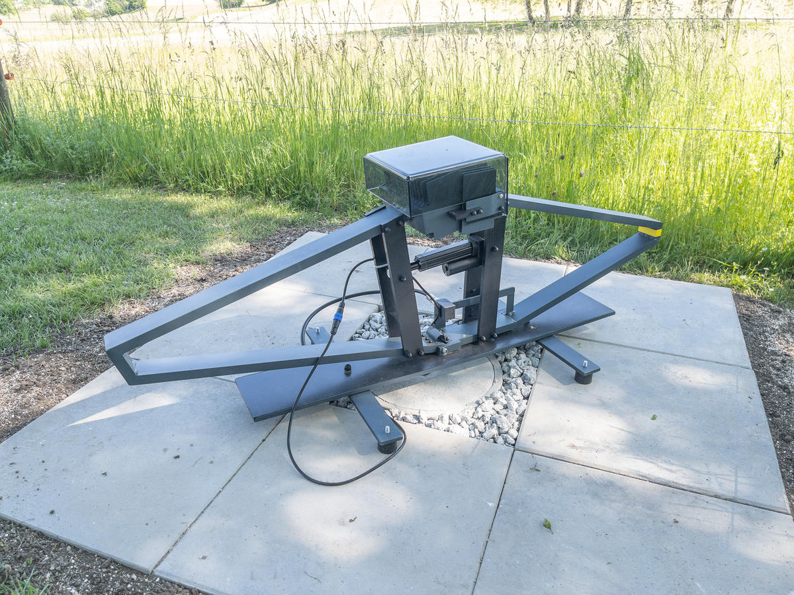
calculator
calculator
calculator
calculator
calculator
calculator
calculator
calculator
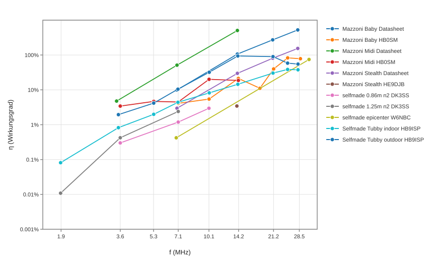
| Brand | selfmade | Mazzoni | Mazzoni | Mazzoni | Selfmade | Selfmade | |
|---|---|---|---|---|---|---|---|
| Name | epicenter | Baby | Baby | Stealth | Tubby indoor | Tubby outdoor | |
| Location | W6NBC | Datasheet | HB0SM | Datasheet | HB9ISP | HB9ISP | |
| Picture | 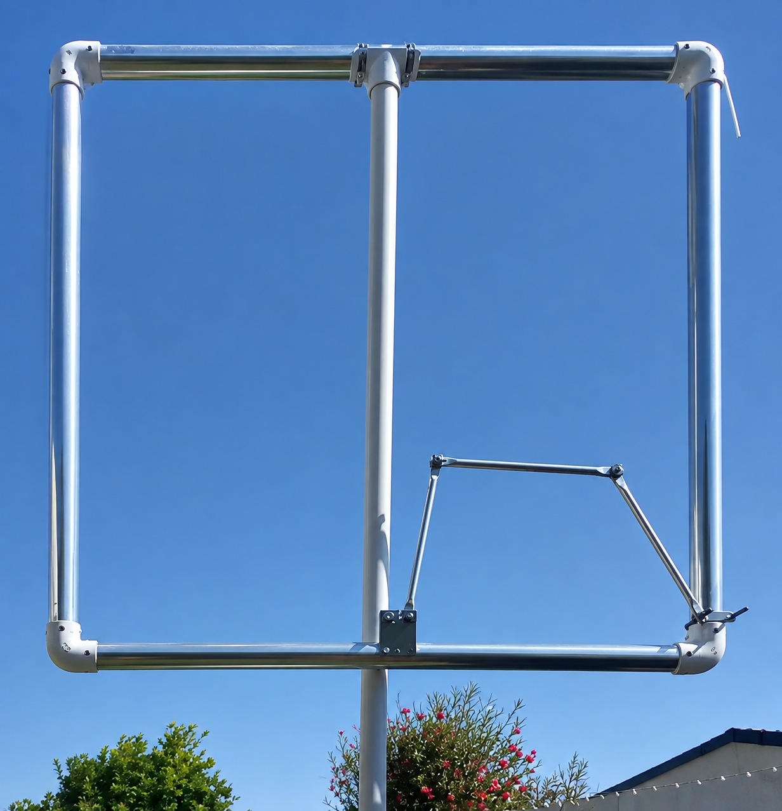 | 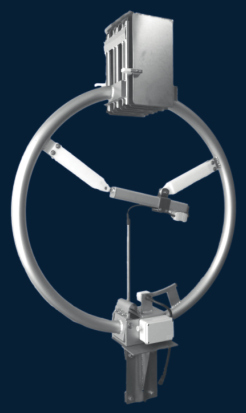 | 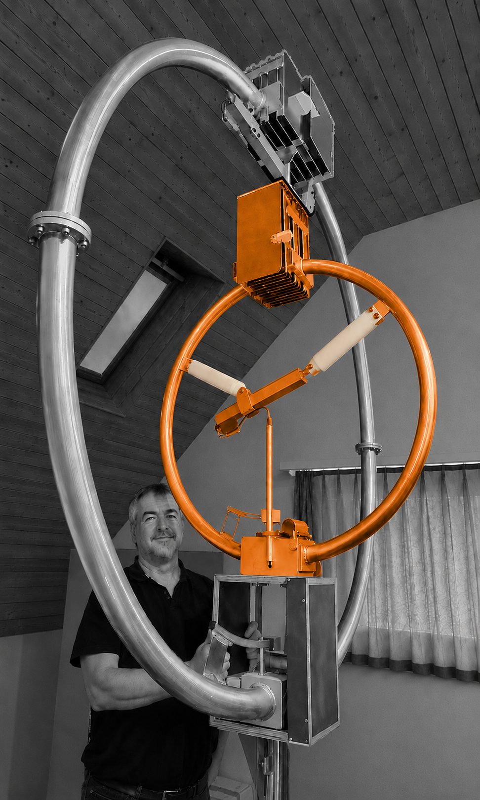 | 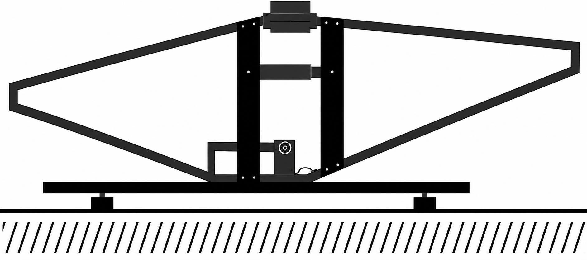 | 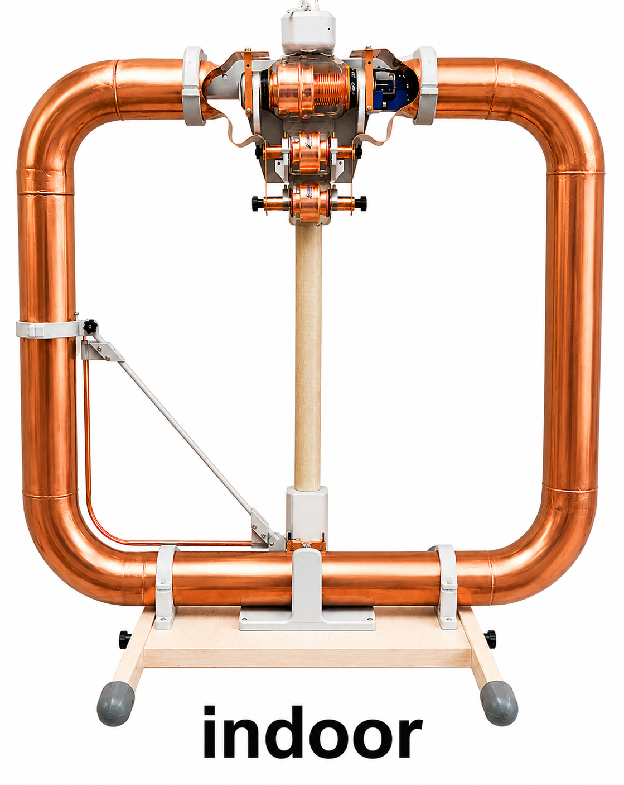 | 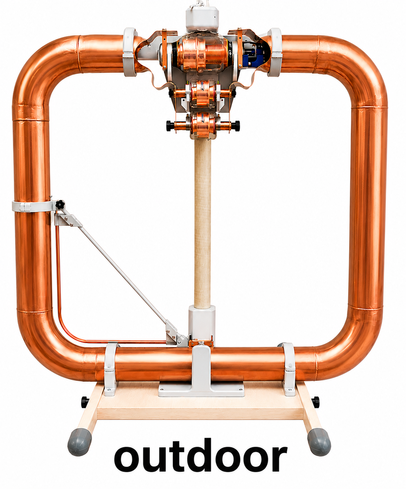 | |
| Links | description calculator | description calculator | description calculator | description calculator | description calculator | description calculator | |
| Loop diameter D | m | 1.376 | 0.940 | 0.940 | 0.646 | 1.014 | 1.014 |
| Conductor diameter d | m | 0.048 | 0.049 | 0.049 | 0.051 | 0.100 | 0.100 |
| Loop count n | 1 | 1 | 1 | 1 | 1 | 1 | 1 |
| Frequency f | MHz | 31.870 | 28.000 | 28.862 | 28.000 | 28.074 | 28.074 |
| Bandwidth BSWR=2.62 | kHz | 700.0 | 20.0 | 147.8 | 25.0 | 452.0 | 310.0 |
| Power into antenna P | W | 100 | 100 | 100 | 100 | 100 | 100 |
| Inductance L | H | 2.96e-06 | 1.79e-06 | 1.79e-06 | 1.06e-06 | 1.53e-06 | 1.53e-06 |
| Capacitance C | F | 8.41e-12 | 1.81e-11 | 1.70e-11 | 3.04e-11 | 2.11e-11 | 2.11e-11 |
| Unloaded Q0 | 1 | 46 | 1400 | 195 | 1120 | 62 | 91 |
| Damping resistance RT | Ohm | 13.038 | 0.225 | 1.660 | 0.167 | 4.335 | 2.973 |
| Radiation resistance RR | Ohm | 9.725 | 1.186 | 1.342 | 0.260 | 1.633 | 1.633 |
| Loss resistance RLoss | Ohm | 3.314 | -0.961 | 0.318 | -0.0927 | 2.702 | 1.341 |
| swr_min | 1 | 1.10 | 1.18 | 1.43 | 1.18 | 1.00 | 1.00 |
| etaSWR_ant | % | 99.8 | 99.3 | 96.9 | 99.3 | 100 | 100 |
| Antenna efficiency η | % | 74.4 | 524 | 78.3 | 154 | 37.7 | 54.9 |
| Loop current I | A | 2.77 | 21.10 | 7.76 | 24.46 | 4.80 | 5.80 |
| Loop voltage Uloop | V | 1644 | 6634 | 2515 | 4579 | 1293 | 1562 |
| Magnetic dipole moment m | A m² | 4.117 | 14.645 | 5.387 | 8.023 | 3.878 | 4.683 |
| Brand | Mazzoni | Selfmade | Selfmade | |
|---|---|---|---|---|
| Name | Baby | Tubby indoor | Tubby outdoor | |
| Location | HB0SM | HB9ISP | HB9ISP | |
| Picture | ||||
| Links | description calculator | description calculator | description calculator | |
| Loop diameter D | m | 0.940 | 1.014 | 1.014 |
| Conductor diameter d | m | 0.049 | 0.100 | 0.100 |
| Loop count n | 1 | 1 | 1 | 1 |
| Frequency f | MHz | 24.937 | 24.915 | 24.915 |
| Bandwidth BSWR=2.62 | kHz | 79.8 | 272.0 | 179.0 |
| Power into antenna P | W | 100 | 100 | 100 |
| Inductance L | H | 1.79e-06 | 1.53e-06 | 1.53e-06 |
| Capacitance C | F | 2.28e-11 | 2.67e-11 | 2.67e-11 |
| Unloaded Q0 | 1 | 312 | 92 | 139 |
| Damping resistance RT | Ohm | 0.896 | 2.609 | 1.717 |
| Radiation resistance RR | Ohm | 0.740 | 1.004 | 1.004 |
| Loss resistance RLoss | Ohm | 0.156 | 1.605 | 0.713 |
| swr_min | 1 | 1.04 | 1.00 | 1.00 |
| etaSWR_ant | % | 100.0 | 100 | 100 |
| Antenna efficiency η | % | 82.6 | 38.5 | 58.5 |
| Loop current I | A | 10.56 | 6.19 | 7.63 |
| Loop voltage Uloop | V | 2958 | 1479 | 1824 |
| Magnetic dipole moment m | A m² | 7.332 | 5.000 | 6.163 |
| Brand | Mazzoni | Mazzoni | Mazzoni | Selfmade | Selfmade | |
|---|---|---|---|---|---|---|
| Name | Baby | Baby | Stealth | Tubby indoor | Tubby outdoor | |
| Location | Datasheet | HB0SM | Datasheet | HB9ISP | HB9ISP | |
| Picture | ||||||
| Links | description calculator | description calculator | description calculator | description calculator | description calculator | |
| Loop diameter D | m | 0.940 | 0.940 | 0.646 | 1.014 | 1.014 |
| Conductor diameter d | m | 0.049 | 0.049 | 0.051 | 0.100 | 0.100 |
| Loop count n | 1 | 1 | 1 | 1 | 1 | 1 |
| Frequency f | MHz | 21.000 | 18.128 | 21.000 | 21.074 | 21.074 |
| Bandwidth BSWR=2.62 | kHz | 12.0 | 121.5 | 15.0 | 175.0 | 59.0 |
| Power into antenna P | W | 100 | 100 | 100 | 100 | 100 |
| Inductance L | H | 1.79e-06 | 1.79e-06 | 1.06e-06 | 1.53e-06 | 1.53e-06 |
| Capacitance C | F | 3.21e-11 | 4.31e-11 | 5.40e-11 | 3.74e-11 | 3.74e-11 |
| Unloaded Q0 | 1 | 1750 | 149 | 1400 | 120 | 357 |
| Damping resistance RT | Ohm | 0.135 | 1.364 | 0.100 | 1.678 | 0.566 |
| Radiation resistance RR | Ohm | 0.369 | 0.204 | 0.0816 | 0.509 | 0.509 |
| Loss resistance RLoss | Ohm | -0.234 | 1.160 | 0.0187 | 1.170 | 0.0571 |
| swr_min | 1 | 1.18 | 3.05 | 1.18 | 1.00 | 1.00 |
| etaSWR_ant | % | 99.3 | 74.3 | 99.3 | 100 | 100 |
| Antenna efficiency η | % | 272 | 11.1 | 80.8 | 30.3 | 89.9 |
| Loop current I | A | 27.24 | 8.56 | 31.58 | 7.72 | 13.29 |
| Loop voltage Uloop | V | 6423 | 1742 | 4433 | 1560 | 2687 |
| Magnetic dipole moment m | A m² | 18.907 | 5.941 | 10.358 | 6.233 | 10.735 |
| Brand | Mazzoni | Mazzoni | Mazzoni | Mazzoni | Mazzoni | Mazzoni | Selfmade | Selfmade | |
|---|---|---|---|---|---|---|---|---|---|
| Name | Baby | Baby | Midi | Midi | Stealth | Stealth | Tubby indoor | Tubby outdoor | |
| Location | Datasheet | HB0SM | Datasheet | HB0SM | Datasheet | HE9DJB | HB9ISP | HB9ISP | |
| Picture |  | |  | ||||||
| Links | description calculator | description calculator | description calculator | description calculator | description calculator | description calculator | description calculator | description calculator | |
| Loop diameter D | m | 0.940 | 0.940 | 1.920 | 1.920 | 0.646 | 0.646 | 1.014 | 1.014 |
| Conductor diameter d | m | 0.049 | 0.049 | 0.073 | 0.073 | 0.051 | 0.051 | 0.100 | 0.100 |
| Loop count n | 1 | 1 | 1 | 1 | 1 | 1 | 1 | 1 | 1 |
| Frequency f | MHz | 14.000 | 14.159 | 14.000 | 14.156 | 14.000 | 13.922 | 14.074 | 14.074 |
| Bandwidth BSWR=2.62 | kHz | 6.0 | 31.1 | 10.0 | 182.1 | 8.0 | 68.2 | 72.0 | 11.1 |
| Power into antenna P | W | 100 | 100 | 100 | 100 | 100 | 100 | 100 | 100 |
| Inductance L | H | 1.79e-06 | 1.79e-06 | 4.04e-06 | 4.04e-06 | 1.06e-06 | 1.06e-06 | 1.53e-06 | 1.53e-06 |
| Capacitance C | F | 7.23e-11 | 7.07e-11 | 3.20e-11 | 3.13e-11 | 1.21e-10 | 1.23e-10 | 8.38e-11 | 8.38e-11 |
| Unloaded Q0 | 1 | 2333 | 456 | 1400 | 78 | 1750 | 204 | 195 | 1268 |
| Damping resistance RT | Ohm | 0.0674 | 0.349 | 0.254 | 4.623 | 0.0535 | 0.456 | 0.691 | 0.106 |
| Radiation resistance RR | Ohm | 0.0721 | 0.0754 | 1.292 | 1.352 | 0.0160 | 0.0157 | 0.0998 | 0.0998 |
| Loss resistance RLoss | Ohm | -0.00471 | 0.273 | -1.038 | 3.271 | 0.0375 | 0.440 | 0.591 | 0.00662 |
| swr_min | 1 | 1.18 | 1.30 | 1.18 | 4.04 | 1.18 | 1.05 | 1.00 | 1.00 |
| etaSWR_ant | % | 99.3 | 98.3 | 99.3 | 63.6 | 99.3 | 99.9 | 100 | 100 |
| Antenna efficiency η | % | 106 | 21.3 | 505 | 18.6 | 29.8 | 3.44 | 14.5 | 93.8 |
| Loop current I | A | 38.53 | 16.93 | 19.85 | 4.65 | 43.24 | 14.81 | 12.03 | 30.65 |
| Loop voltage Uloop | V | 6056 | 2692 | 7054 | 1671 | 4047 | 1379 | 1624 | 4137 |
| Magnetic dipole moment m | A m² | 26.738 | 11.752 | 57.465 | 13.466 | 14.184 | 4.859 | 9.718 | 24.750 |
| Brand | selfmade | Mazzoni | Mazzoni | Selfmade | Selfmade | |
|---|---|---|---|---|---|---|
| Name | 0.86m n2 | Baby | Midi | Tubby indoor | Tubby outdoor | |
| Location | DK3SS | HB0SM | HB0SM | HB9ISP | HB9ISP | |
| Picture | 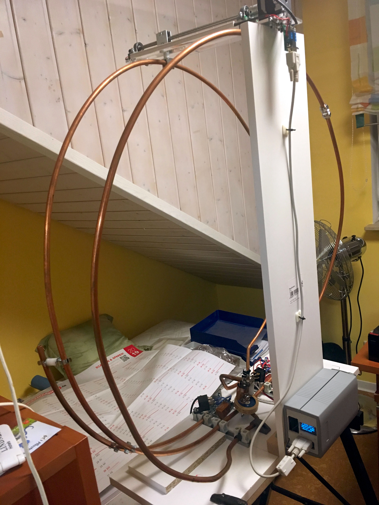 | | ||||
| Links | description calculator | description calculator | description calculator | description calculator | description calculator | |
| Loop diameter D | m | 0.860 | 0.940 | 1.920 | 1.014 | 1.014 |
| Conductor diameter d | m | 0.010 | 0.049 | 0.073 | 0.100 | 0.100 |
| Loop count n | 1 | 2 | 1 | 1 | 1 | 1 |
| Frequency f | MHz | 10.100 | 10.114 | 10.116 | 10.136 | 10.136 |
| Bandwidth BSWR=2.62 | kHz | 39.9 | 27.3 | 57.1 | 34.0 | 8.7 |
| Power into antenna P | W | 100 | 100 | 100 | 100 | 100 |
| Inductance L | H | 7.32e-06 | 1.79e-06 | 4.04e-06 | 1.53e-06 | 1.53e-06 |
| Capacitance C | F | 3.39e-11 | 1.39e-10 | 6.13e-11 | 1.62e-10 | 1.62e-10 |
| Unloaded Q0 | 1 | 253 | 371 | 177 | 298 | 1165 |
| Damping resistance RT | Ohm | 1.836 | 0.306 | 1.449 | 0.326 | 0.0834 |
| Radiation resistance RR | Ohm | 0.0544 | 0.0195 | 0.346 | 0.0267 | 0.0267 |
| Loss resistance RLoss | Ohm | 1.782 | 0.286 | 1.103 | 0.299 | 0.0567 |
| swr_min | 1 | 1.00 | 2.26 | 2.33 | 1.00 | 1.00 |
| etaSWR_ant | % | 100 | 85.1 | 84.1 | 100 | 100 |
| Antenna efficiency η | % | 2.96 | 5.43 | 20.1 | 8.19 | 32.0 |
| Loop current I | A | 7.38 | 18.08 | 8.31 | 17.51 | 34.62 |
| Loop voltage Uloop | V | 3429 | 2053 | 2133 | 1702 | 3365 |
| Magnetic dipole moment m | A m² | 8.573 | 12.546 | 24.050 | 14.141 | 27.956 |
| Brand | selfmade | selfmade | selfmade | Mazzoni | Mazzoni | Mazzoni | Mazzoni | Mazzoni | Selfmade | Selfmade | |
|---|---|---|---|---|---|---|---|---|---|---|---|
| Name | 0.86m n2 | 1.25m n2 | epicenter | Baby | Baby | Midi | Midi | Stealth | Tubby indoor | Tubby outdoor | |
| Location | DK3SS | DK3SS | W6NBC | Datasheet | HB0SM | Datasheet | HB0SM | Datasheet | HB9ISP | HB9ISP | |
| Picture | 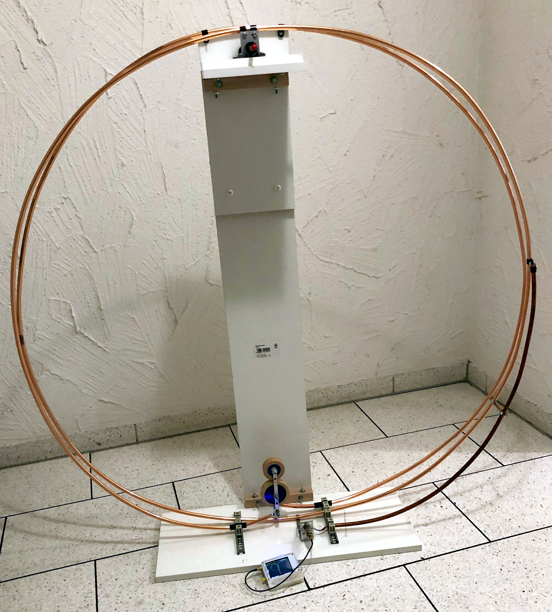 | | |||||||||
| Links | description calculator | description calculator | description calculator | description calculator | description calculator | description calculator | description calculator | description calculator | description calculator | description calculator | |
| Loop diameter D | m | 0.860 | 1.250 | 1.376 | 0.940 | 0.940 | 1.920 | 1.920 | 0.646 | 1.014 | 1.014 |
| Conductor diameter d | m | 0.010 | 0.010 | 0.048 | 0.049 | 0.049 | 0.073 | 0.073 | 0.051 | 0.100 | 0.100 |
| Loop count n | 1 | 2 | 2 | 1 | 1 | 1 | 1 | 1 | 1 | 1 | 1 |
| Frequency f | MHz | 7.100 | 7.100 | 6.940 | 7.000 | 7.100 | 7.000 | 7.097 | 7.000 | 7.074 | 7.074 |
| Bandwidth BSWR=2.62 | kHz | 24.2 | 33.3 | 200.0 | 4.0 | 9.7 | 6.0 | 47.2 | 5.0 | 15.0 | 6.3 |
| Power into antenna P | W | 100 | 100 | 100 | 100 | 100 | 100 | 100 | 100 | 100 | 100 |
| Inductance L | H | 7.32e-06 | 1.18e-05 | 2.96e-06 | 1.79e-06 | 1.79e-06 | 4.04e-06 | 4.04e-06 | 1.06e-06 | 1.53e-06 | 1.53e-06 |
| Capacitance C | F | 6.86e-11 | 4.25e-11 | 1.77e-10 | 2.89e-10 | 2.81e-10 | 1.28e-10 | 1.24e-10 | 4.86e-10 | 3.32e-10 | 3.32e-10 |
| Unloaded Q0 | 1 | 293 | 213 | 35 | 1750 | 731 | 1167 | 150 | 1400 | 472 | 1123 |
| Damping resistance RT | Ohm | 1.115 | 2.473 | 3.725 | 0.0449 | 0.109 | 0.152 | 1.197 | 0.0334 | 0.144 | 0.0604 |
| Radiation resistance RR | Ohm | 0.0133 | 0.0593 | 0.0199 | 0.00447 | 0.00473 | 0.0784 | 0.0829 | 0.000998 | 0.00632 | 0.00632 |
| Loss resistance RLoss | Ohm | 1.101 | 2.414 | 3.705 | 0.0404 | 0.104 | 0.0739 | 1.114 | 0.0324 | 0.138 | 0.0541 |
| swr_min | 1 | 1.00 | 1.00 | 2.70 | 1.18 | 1.60 | 1.18 | 3.93 | 1.18 | 1.00 | 1.00 |
| etaSWR_ant | % | 100 | 100 | 78.9 | 99.3 | 94.7 | 99.3 | 64.7 | 99.3 | 100 | 100 |
| Antenna efficiency η | % | 1.19 | 2.40 | 0.421 | 9.89 | 4.11 | 51.1 | 4.48 | 2.97 | 4.39 | 10.5 |
| Loop current I | A | 9.47 | 6.36 | 5.18 | 47.19 | 30.28 | 25.62 | 9.14 | 54.70 | 26.36 | 40.68 |
| Loop voltage Uloop | V | 3094 | 3350 | 670 | 3709 | 2413 | 4553 | 1646 | 2559 | 1789 | 2760 |
| Magnetic dipole moment m | A m² | 11.003 | 15.606 | 7.701 | 32.748 | 21.012 | 74.186 | 26.460 | 17.941 | 21.290 | 32.852 |
| Brand | Mazzoni | Selfmade | Selfmade | |
|---|---|---|---|---|
| Name | Midi | Tubby indoor | Tubby outdoor | |
| Location | HB0SM | HB9ISP | HB9ISP | |
| Picture | | |||
| Links | description calculator | description calculator | description calculator | |
| Loop diameter D | m | 1.920 | 1.014 | 1.014 |
| Conductor diameter d | m | 0.073 | 0.100 | 0.100 |
| Loop count n | 1 | 1 | 1 | 1 |
| Frequency f | MHz | 5.362 | 5.357 | 5.357 |
| Bandwidth BSWR=2.62 | kHz | 18.2 | 10.9 | 5.2 |
| Power into antenna P | W | 100 | 100 | 100 |
| Inductance L | H | 4.04e-06 | 1.53e-06 | 1.53e-06 |
| Capacitance C | F | 2.18e-10 | 5.78e-10 | 5.78e-10 |
| Unloaded Q0 | 1 | 295 | 491 | 1030 |
| Damping resistance RT | Ohm | 0.462 | 0.105 | 0.0499 |
| Radiation resistance RR | Ohm | 0.0269 | 0.00208 | 0.00208 |
| Loss resistance RLoss | Ohm | 0.435 | 0.102 | 0.0478 |
| swr_min | 1 | 2.61 | 1.00 | 1.00 |
| etaSWR_ant | % | 80.1 | 100 | 100 |
| Antenna efficiency η | % | 4.66 | 1.99 | 4.16 |
| Loop current I | A | 14.71 | 30.93 | 44.78 |
| Loop voltage Uloop | V | 2003 | 1589 | 2301 |
| Magnetic dipole moment m | A m² | 42.604 | 24.976 | 36.160 |
| Brand | selfmade | selfmade | Mazzoni | Mazzoni | Selfmade | Selfmade | |
|---|---|---|---|---|---|---|---|
| Name | 0.86m n2 | 1.25m n2 | Midi | Midi | Tubby indoor | Tubby outdoor | |
| Location | DK3SS | DK3SS | Datasheet | HB0SM | HB9ISP | HB9ISP | |
| Picture | | ||||||
| Links | description calculator | description calculator | description calculator | description calculator | description calculator | description calculator | |
| Loop diameter D | m | 0.860 | 1.250 | 1.920 | 1.920 | 1.014 | 1.014 |
| Conductor diameter d | m | 0.010 | 0.010 | 0.073 | 0.073 | 0.100 | 0.100 |
| Loop count n | 1 | 2 | 2 | 1 | 1 | 1 | 1 |
| Frequency f | MHz | 3.650 | 3.650 | 3.500 | 3.650 | 3.573 | 3.573 |
| Bandwidth BSWR=2.62 | kHz | 6.7 | 13.2 | 4.0 | 6.2 | 5.2 | 2.2 |
| Power into antenna P | W | 100 | 100 | 100 | 100 | 100 | 100 |
| Inductance L | H | 7.32e-06 | 1.18e-05 | 4.04e-06 | 4.04e-06 | 1.53e-06 | 1.53e-06 |
| Capacitance C | F | 2.60e-10 | 1.61e-10 | 5.12e-10 | 4.71e-10 | 1.30e-09 | 1.30e-09 |
| Unloaded Q0 | 1 | 545 | 277 | 875 | 590 | 687 | 1624 |
| Damping resistance RT | Ohm | 0.308 | 0.978 | 0.102 | 0.157 | 0.0499 | 0.0211 |
| Radiation resistance RR | Ohm | 0.000925 | 0.00413 | 0.00487 | 0.00576 | 0.000410 | 0.000410 |
| Loss resistance RLoss | Ohm | 0.307 | 0.974 | 0.0967 | 0.151 | 0.0495 | 0.0207 |
| swr_min | 1 | 1.00 | 1.00 | 1.18 | 1.70 | 1.00 | 1.00 |
| etaSWR_ant | % | 100 | 100 | 99.3 | 93.3 | 100 | 100 |
| Antenna efficiency η | % | 0.300 | 0.422 | 4.76 | 3.42 | 0.823 | 1.95 |
| Loop current I | A | 18.02 | 10.11 | 31.38 | 25.24 | 44.78 | 68.84 |
| Loop voltage Uloop | V | 3025 | 2739 | 2788 | 2339 | 1535 | 2359 |
| Magnetic dipole moment m | A m² | 20.930 | 24.822 | 90.859 | 73.087 | 36.160 | 55.593 |
| Brand | selfmade | Selfmade | |
|---|---|---|---|
| Name | 1.25m n2 | Tubby indoor | |
| Location | DK3SS | HB9ISP | |
| Picture | |||
| Links | description calculator | description calculator | |
| Loop diameter D | m | 1.250 | 1.014 |
| Conductor diameter d | m | 0.010 | 0.100 |
| Loop count n | 1 | 2 | 1 |
| Frequency f | MHz | 1.840 | 1.840 |
| Bandwidth BSWR=2.62 | kHz | 33.1 | 3.7 |
| Power into antenna P | W | 100 | 100 |
| Inductance L | H | 1.18e-05 | 1.53e-06 |
| Capacitance C | F | 6.34e-10 | 4.90e-09 |
| Unloaded Q0 | 1 | 56 | 497 |
| Damping resistance RT | Ohm | 2.457 | 0.0355 |
| Radiation resistance RR | Ohm | 0.000267 | 0.000029 |
| Loss resistance RLoss | Ohm | 2.457 | 0.0355 |
| swr_min | 1 | 1.00 | 1.00 |
| etaSWR_ant | % | 100 | 100 |
| Antenna efficiency η | % | 0.011 | 0.081 |
| Loop current I | A | 6.38 | 53.08 |
| Loop voltage Uloop | V | 871 | 937 |
| Magnetic dipole moment m | A m² | 15.658 | 42.868 |